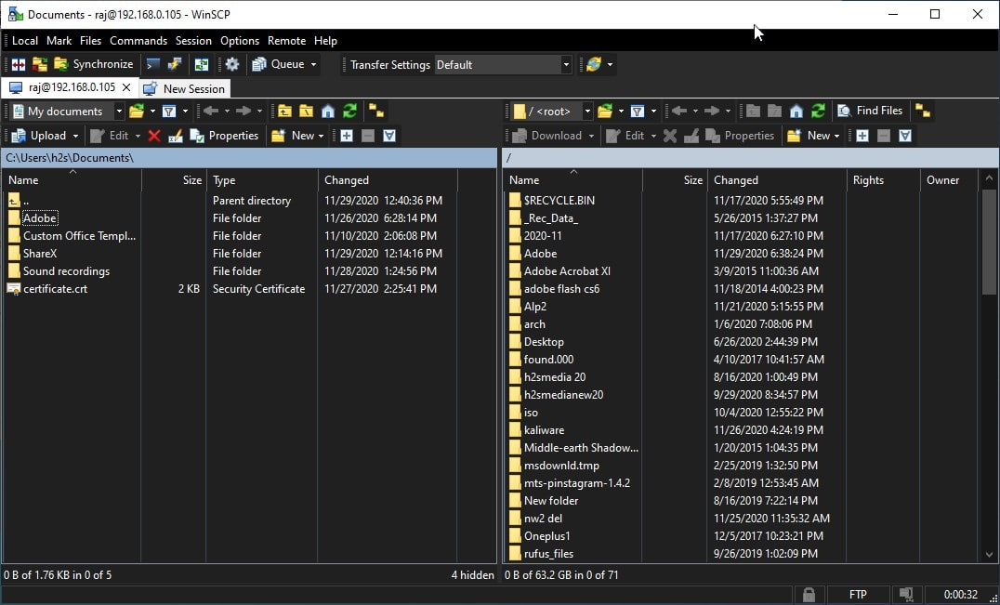

6. Servidor FTP + SSH en Linux
¿Qué es FTP y SSH?
FTP (File Transfer Protocol) es un protocolo estándar para transferir archivos entre un cliente y un servidor a través de una red. Sin embargo, FTP tradicional transmite datos (incluyendo contraseñas) en texto claro, lo que no es seguro.
SSH (Secure Shell) es un protocolo cifrado que permite acceso remoto seguro a servidores Linux. A través de SSH, se puede habilitar SFTP (SSH File Transfer Protocol), una alternativa segura a FTP.
Utilidad
Estos servicios son esenciales para:
- Subir y descargar archivos de servidores (ej. sitios web, bases de datos, scripts).
- Administrar equipos remotos de forma segura.
- Automatizar tareas de despliegue y respaldo.
- Acceder a recursos en entornos académicos o empresariales sin exponer credenciales.
Instalación en Ubuntu Server
Servidor FTP (vsftpd):
sudo apt update
sudo apt install vsftpdServidor SSH (normalmente ya instalado):
sudo apt install openssh-serverConfiguración básica
1. Configurar vsftpd (/etc/vsftpd.conf):
write_enable=YES
local_umask=022
chroot_local_user=YES
allow_writeable_chroot=YES
pasv_enable=YES
pasv_min_port=40000
pasv_max_port=500002. Crear usuario FTP:
sudo adduser ftpuser3. Reiniciar el servicio:
sudo systemctl restart vsftpd4. Habilitar SFTP:
SFTP funciona automáticamente al instalar openssh-server.
Los usuarios existentes pueden conectarse mediante SFTP sin configuración adicional.
Comandos útiles
| Comando | Descripción |
|---|---|
sudo systemctl status vsftpd |
Ver estado del servidor FTP. |
sudo ufw allow 20:21/tcp |
Abrir puertos FTP en el firewall. |
sudo ufw allow 40000:50000/tcp |
Abrir rango de puertos pasivos. |
sftp usuario@ip |
Conectarse vía SFTP desde terminal Linux. |
ssh usuario@ip |
Acceso remoto seguro vía SSH. |
Implementación con clientes en Windows
1. FileZilla (para FTP/SFTP):
- Protocolo:
FTPoSFTP. - Host: dirección IP de la VM Linux.
- Usuario y contraseña: del usuario creado (ej.
ftpuser). - Para SFTP, usa puerto
22.
2. PuTTY (para SSH):
- Abre PuTTY, ingresa la IP de la VM.
- Deja el puerto en
22y tipo de conexión enSSH. - Al conectarse, inicia sesión con credenciales de Linux.
También se puede usar WinSCP para transferencias gráficas seguras vía SFTP.
 ← Volver al inicio